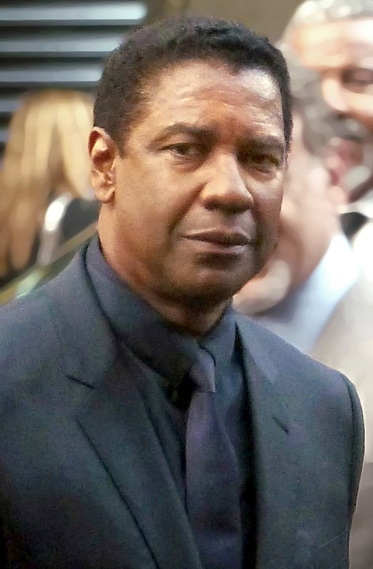

Denzel Washington Tribute Page
Denzel Washington jr.
American actor, director, and producer

Denzel Washington at the press conference of The Magnificent Seven, 2016 Toronto Film Festival.
Image by
GabboT
source
Mag7 PC 13
licensed by
CC BY-SA 2.0
at
wikimedia commons